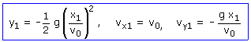
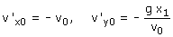
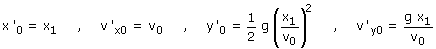
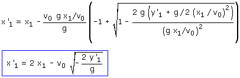
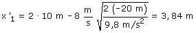
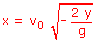
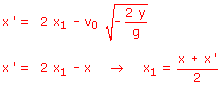
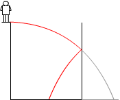

1ª parte
Choque de la pelota con la pared (Posición y velocidad)

Datos: x1 = 10 m, v0 = 8 m/s
2ª parte
Velocidad de la pelota tras el choque con la pared
En un choque oblicuo elástico la velocidad paralela a la pared (vy) se conserva y la velocidad normal (vx) se invierte. Estas velocidades tras el choque son las velocidades iniciales del nuevo movimiento

Llegada la pelota al suelo

Parámetros:


Sustituyendo valores numéricos:

Observación curiosa:
Comprueba tu mismo/misma que si no hubiera pared la pelota habría tocado el suelo en:

Y hemos obtenido que, tras chocar con la pared, la pelota toca el suelo en:

 |
La pared está en el
punto medio entre las dos posiciones |